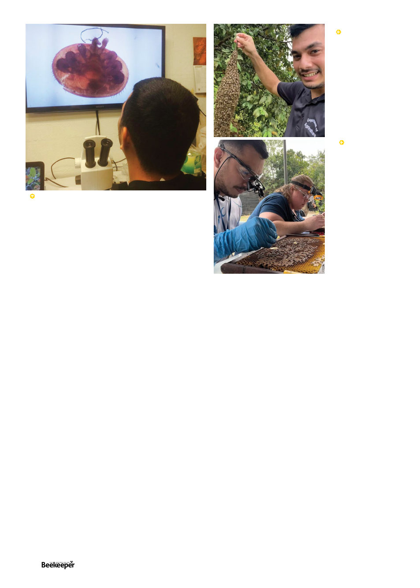

REFERENCES
*. Where bees had arrived in 1857 from California,3 where bees had only
arrived in 18534, but I digress
†. https://ushoneybeehealthsurvey.info/
**. These wasp species were themselves introduced via Japanese vessels in WWII
1.
Serrano, J (2024) “How One Entomologist Works to Combat Invasive
Species and Protect Honey Bees on Guam” Entomology Today https://
entomologytoday.org/2024/03/25/entomologist-invasive-species-honey-
bees-guam-christopher-rosario-standout-early-career-professional/
2.
All otherwise uncited quotes and details: from personal communication
with Christopher Rosario June and July 2024
3.
Roddy, K., Arita-Tsutsumi, L., (1997) “A History of Honey Bees in the
Hawaiian Islands” Journal of Hawaiian and Pacific Agriculture Volume 8
No 1 https://hilo.hawaii.edu/panr/writing.php?id=198
4.
Harbison, J.S. (1919) “Introduction of the Honeybee to California”
American Bee Journal (59)9: 268-270
5.
Prendergast, K., (2017) “Mites Hawaii and the Varroa Mite: A case study”
https://blythewoodbeecompany.com/blogs/news/mite-in-hawaii-and-the-
varroa-mite-a-case-study
6.
Huntsdale, J., (2018) “Sentinel Beehives Provide Coastal Defence Against
Catastrophic Varroa Mite Invasion” Australian Broadcasting Corporation
Feb 23rd https://www.abc.net.au/news/2018-02-23/sentinel-bee-hive-
program-defending-against-varroa-mite/9470992
7.
Hilton, A., (2024) “Varroa mites have infested honey bee hives across
NSW. The fight is on to contain their spread to other states” Australian
Broadcasting Corporation July 6th https://www.abc.net.au/news/2024-
07-06/states-battle-against-varroa-mite-spread/104014530
8.
Rosario, C., (2018) “Greater banded hornet (Vespa tropica) established
at several locations on Guam” [poster presentation] Meeting of the
Entomological Societies of America, Canada, and British Colombia,
Vancouver, BC, Canada
Chris Rosario, you will recall, had wanted to be a veterinarian
when he found work as a technician in the honey bee survey.
“This survey opened my eyes to research because so little was
known about honey bees in Guam. It then made me want to
go into graduate school, where I used this survey as my research
project,” Rosario told Entomology Today1. In 2021 he received
his Master’s Degree in environmental science with a focus on
entomology. His boss, Dr Campbell, happened to be retiring,
and Rosario successfully applied for the position, becoming the
first native of Guam to be the island’s state entomologist.
Christopher
Rosario and apiary
inspectors from
across the US made
their way to
Thailand for a
Tropilaelaps
detection workshop
conducted by
Auburn and Chiang
Mai universities,
and funded by the
North Dakota Dept
of Agriculture and
Project Apis, in
January 2024.
nest of several tiers of dark paper mâché filled with bright
white pupal cocoons like an arsenal of missiles ready to launch,
and covering this and flying around it were large inch-long
brown hornets with a single broad yellow band around their
abdomen: the Greater Banded Hornet, Vespa tropica. Soon
they were being found all over the island, it was already too
late to prevent them from taking hold.8
It’s believed the hornets came in an empty cargo container
on a ship from Southeast Asia. Rosario, sensing what a
threat this species was, was “extremely devastated” when
he found the hornets. Other entomologists assured him they
weren’t a pest of honey bees, but that sadly proved untrue.
These hornets’ first preference for prey is paper wasps, and
the island’s wasp population (Polistes olivaceus, & Polistes
stigma**, known locally as “boonie bees”) immediately
crashed. Running out of wasps to eat, the hornets turned to
bees, and 55 managed colonies have been lost to hornets to
date (one out of every six hives!).
Guam is so far free from Foulbrood (EFB or AFB), or small
hive beetle, though they do suffer from Chalkbrood due to
the high humidity.
Guam does not have any specific biosecurity officers.
In 2003 the Plant Protection Quarantine officers they had
had were merged into the Guam Customs and Quarantine
“which essentially gutted the Department of Agriculture’s
biosecurity program” (As Dr Campbell put it). Today the
Guam Department of Agriculture, Customs and Quarantine
Agency, and US Department of Agriculture APHIS Plant
Protection Quarantine work together for management
and prevention of invasive species. It is estimated that
every year a hundred invasive species arrive in Guam via
the ports, with three successfully establishing themselves.1
Coconut rhinoceros beetles (Oryctes rhinoceros), little fire
ants (Wasmannia auropunctata), and Asian Cycad Scale
(Aulacaspis yasumatsui) (an insect which attacks Guam’s
native Cycas micronesica, a ferny plant) are a few examples
of other invasive pests that have unfortunately become
established. The rhinoceros beetles have destroyed over half
the island’s coconut trees.
Rosario sees a real Varroa mite up close for the first
time, looking at the sample from Tinian Island back at
University of Guam’s Bioquarantine Lab.
Christopher
Rosario with a
swarm reported
by a resident,
April 2021
40 |
Celebrating 125 years | Vol. 126 | No. 02